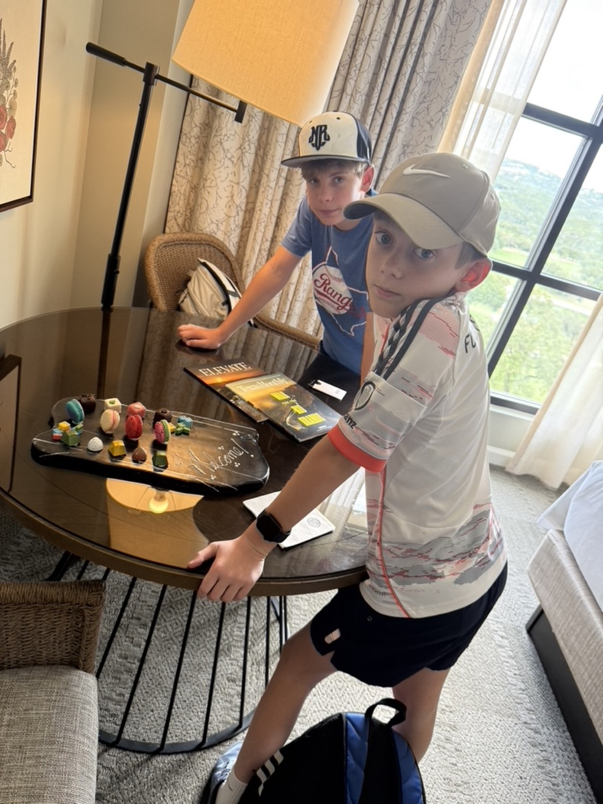
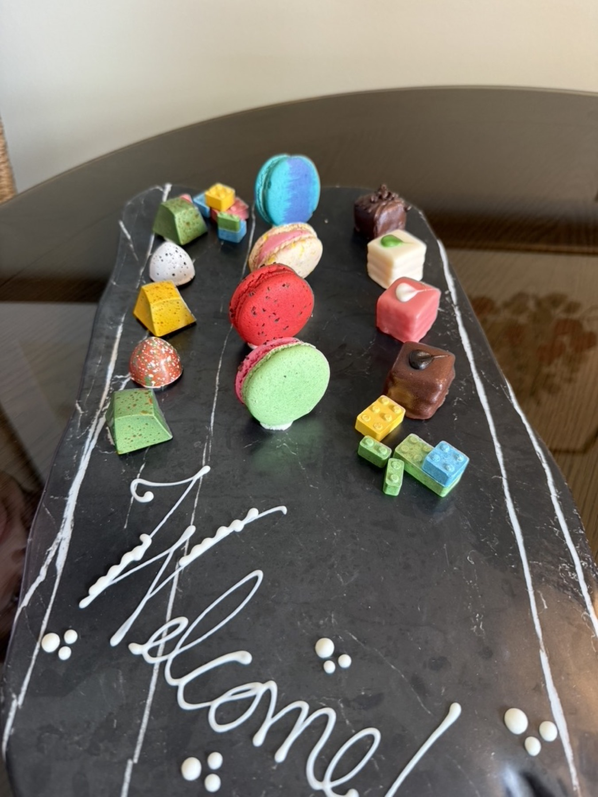
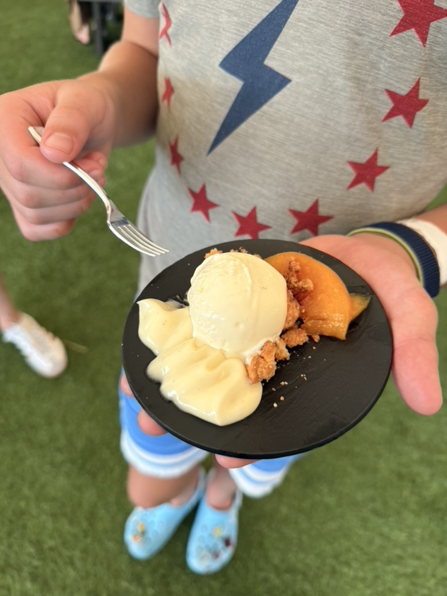
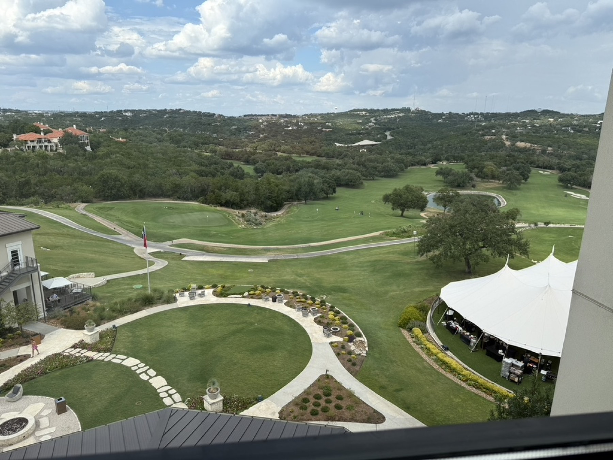
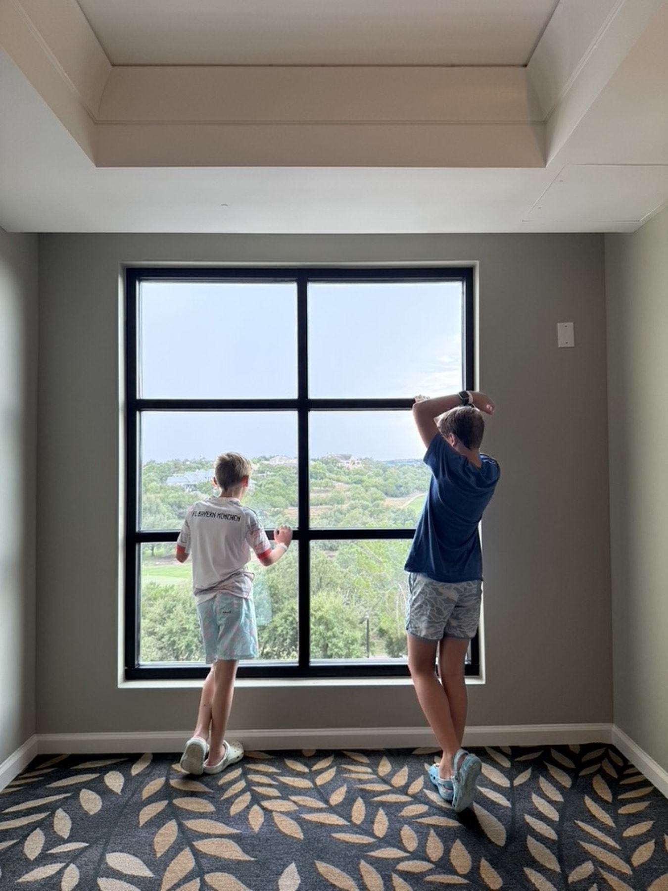

Sometimes the best trips are the ones that don't require a suitcase strategy.
Over Labor Day weekend, a friend of ours (who happens to be the GM) invited us to check out the Omni Barton Creek Resort & Spa. We packed up our 11-year-old and his buddy, booked two adjoining rooms, and made the drive... all 25 minutes of it.
That's the part that still gets me: Steiner Ranch is about 25 minutes from a world-class resort, and so many of us have never set foot on the property. It's been sitting there the whole time, just past the edge of our everyday radius.
I'll be honest: it was a holiday weekend, and it was busy. But once we checked into our room — stylish, well decorated, and quiet — the crowds sort of faded into the background. The boys found a welcome tray waiting for them in their room (a whole spread of macarons, petit fours, and candy Legos), which pretty much set the tone for the trip.


That evening we headed downstairs for the Barton Creek food tasting event they were hosting, complete with food and drinks, a shopping pavilion, and a kids' area. Peach cobbler with vanilla ice cream on a tiny plate? Yes, please.

But my favorite part of the evening was the lawn. Kids everywhere, running free, roasting marshmallows for s'mores at the fire pits, throwing footballs, kicking soccer balls, no screens in sight. Nobody was hovering. It was so refreshing to just let them go and know they were fine.
What stuck with me
The art. It's everywhere around the resort, and it's all local: Hill Country scenes, the landscapes we drive past every day, hung in a way that makes you actually stop and look. I lost count of how many pieces I wanted to take home with me. And the views outside the windows match: rolling Hill Country greens, the golf course, big Texas sky. You would never guess you're 20 minutes from downtown Austin.

At one point I caught the boys just standing at a window waiting for the elevator, taking it all in. Eleven-year-olds don't stop for views. These two did.

The pool, not gonna lie, was a bit crazy. Holiday weekend, full house, lots of kids. I'd absolutely go back on a regular weekend to enjoy it at a slower pace.
And the sleep. The rooms are so quiet. My husband is a famously fussy sleeper, and he was genuinely awestruck at the lack of noise. His Whoop backed him up the next morning with a great sleep score, which legitimizes everything, right?
We skipped the spa this time (next visit, for sure), enjoyed the brunch buffet Monday morning, and were home before lunch.
The takeaway
It's amazing how much a single night away can reset you when you're not spending half of it in the car. Twenty minutes out, one night, and we came home feeling like we'd been on vacation. It's therapeutic, and it's right here in our backyard.